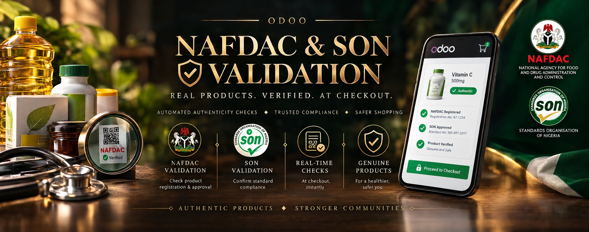
I spent the past few days building three Odoo modules that check a product's NAFDAC and SON registration automatically — starting at the point a batch is actually produced, continuing through the warehouse, and enforced again at the exact moment a Nigerian shopper adds it to their cart, blocking checkout if the check fails. Before writing a line of copy about it, I did the honest thing: I picked up a real medicine box and tried to verify it myself, using NAFDAC's own Scan2Verify app. It could not tell me whether the product was genuine. This article is about what I built, what I found, and a question I'd genuinely like NAFDAC and SON to answer.
Before building anything, I wanted to understand the tool Nigerian consumers are actually handed today. NAFDAC's Scan2Verify app — built on GS1 traceability standards and positioned as the modern successor to the agency's older scratch-code system — puts four options in front of you on opening: GLN Info, Decoding, Product Info, and Verify. I picked a real product off my own shelf, a medicine box carrying a standard GS1 barcode, and worked through all four.
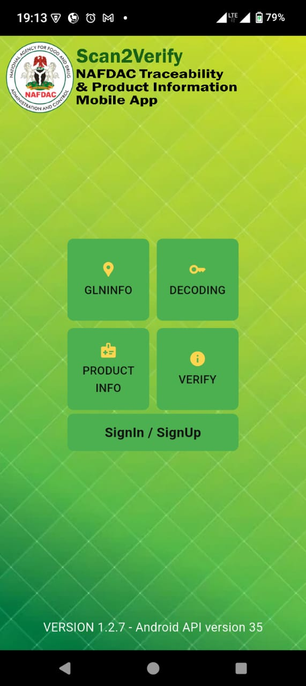
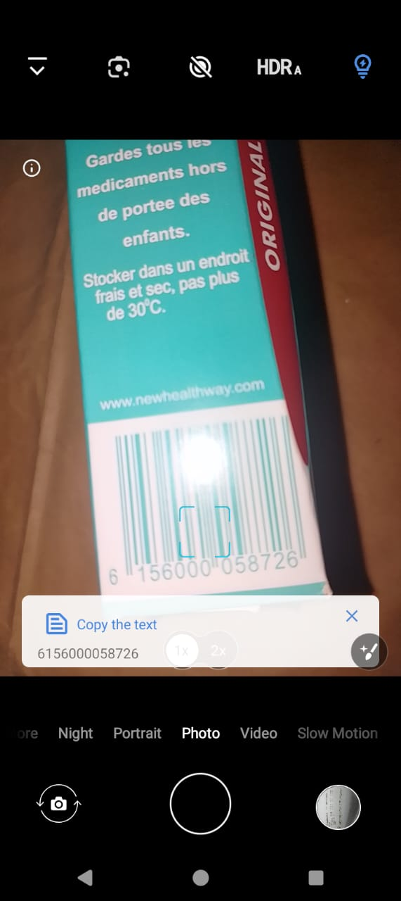
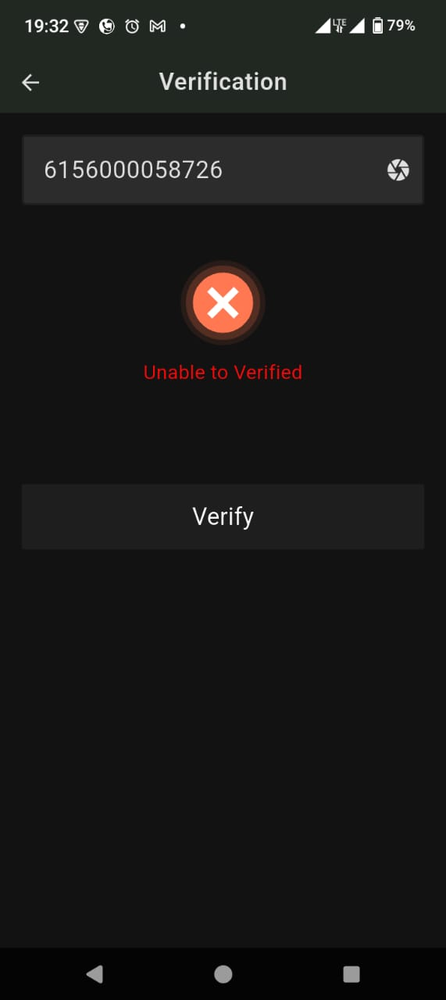
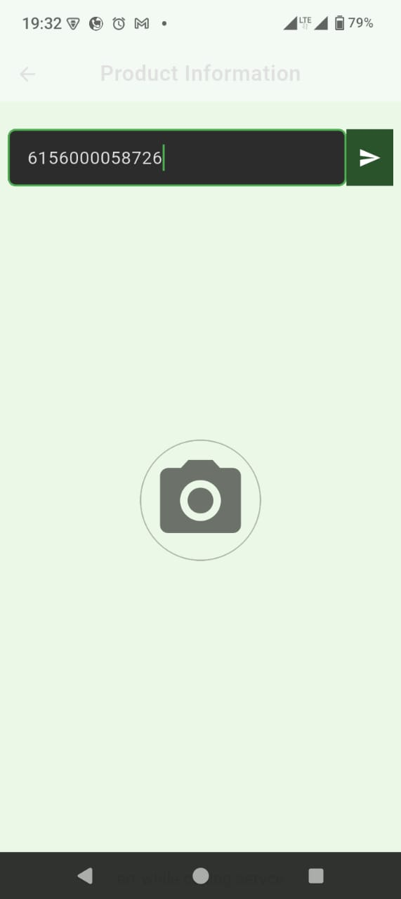
Verify returned a flat "Unable to Verified" with no further explanation — not "not registered," not "check your connection," not "try again later." Just a red X. Product Info accepted the same barcode and returned nothing at all: no manufacturer, no registration status, no expiry date, no error message either. As a shopper standing in front of a shelf, I had no more information after using the app than before I opened it.
It could be a GLN/registration record missing from Scan2Verify's backend for this product, a barcode format the decoder doesn't recognise, a connectivity issue on my end, or a real authenticity flag with no consumer-facing detail. That ambiguity is itself the problem — and it's exactly the kind of question I'd like NAFDAC to answer publicly.
I went looking for whether my experience was typical, and it is. The Foundation for Investigative Journalism (FIJ) has run this exact test twice, roughly a year apart, across NAFDAC's four public verification tools — MAS, Greenbook, NAPAMS, and Scan2Verify. In their first pass, testing several real medicine packs, none of the products scanned through Scan2Verify returned any valid data, and the tool's other lookup features fared no better. Running the same test again in mid-2026, Scan2Verify was again the weakest of the four tools, correctly verifying only one of seven products tested.
The older MAS scratch-code system doesn't fare much better under pressure: it depends on relaying a code to one of five separate authentication providers by SMS, and FIJ's testers recorded waits of several hours for a response that is supposed to arrive "at the point of purchase." A verification system a shopper cannot use while standing at the till isn't solving the problem it was built for. Public app-store reviews echo the same frustration — one Scan2Verify reviewer on the App Store put it bluntly: they couldn't even complete sign-up to try verifying a product at all.
A verification tool that takes hours to respond, or returns nothing at all, doesn't protect the shopper standing in the aisle deciding whether to trust what's on the shelf.
— The gap this project tries to close, at least for Odoo-run storesNone of this is a minor gap. NAFDAC's own enforcement figures describe a market with a serious counterfeiting problem: the agency has reported destroying more than ₦1.5 trillion worth of fake and substandard products between June 2025 and June 2026 alone, with 47,830 facilities currently under surveillance nationwide. Separate reporting found that despite 5,210 investigations and over 45,000 surveillance operations across three years, only a small fraction were ever taken forward to prosecution.
That is a lot of enforcement muscle aimed at the supply side — raids, seizures, destroyed truckloads — and comparatively little that puts a reliable, fast answer in a shopper's hand at the moment they're deciding whether to buy. Enforcement after the fact doesn't help the person already holding the product. A working point-of-purchase check does.
Since I run Odoo deployments for clients selling regulated goods in Nigeria, I built the check into every place a regulated item passes through — not just checkout. Odoo itself is free and open-source software — no licence fee to run it, self-hosted, whether you're a single pharmacy or a multi-branch distributor. mrp_nafdac_son_registration hooks into the Manufacturing app itself: it adds a "Capture NAFDAC/SON Evidence" action to every Manufacturing Order, letting whoever's on the line record a photo/video, the batch or lot identifier, and a full snapshot of the product record at the moment a batch is actually produced — before that batch has gone anywhere near a warehouse or a shopper. nafdac_son_verification then adds NAFDAC and SON registration fields to Products and Lots/Serials, logs every check for audit, and can block a warehouse transfer from being validated if a regulated item hasn't passed. website_sale_nafdac_son_verification extends that into the storefront: it re-checks stale statuses whenever a shopper opens the cart or moves through checkout, shows a status badge on every regulated line item, and — if the store owner opts in — blocks payment outright on a failed or unchecked product, with a plain-language explanation instead of a silent failure.
The manufacturing module closes a loop the other two can't: by the time a product reaches
checkout, whatever happened on the production line is already history. NAFDAC and SON
inspect factories and packaging lines as much as finished goods on a shelf, so
mrp_nafdac_son_registration captures that evidence — who ran the batch, what
it looked like, which lot number it became — at the only moment it can be captured
contemporaneously, and stores it permanently regardless of whether any submission channel to
the regulator exists yet. It mirrors the same "ships disabled, activate once a real endpoint
exists" pattern Odoo itself uses for Payment Providers: a regulatory.submission.provider
record per regulator (NAFDAC, SON), a submission queue that starts filling the moment evidence
is captured, and one clearly marked stub method — _send_to_provider() — that's the
single point to wire in a real HTTP call once NAFDAC or SON publish a manufacturer-facing
submission API. Until then, every queued submission fails loudly and specifically, rather than
silently pretending to have gone through.
Neither NAFDAC nor SON currently publishes a stable, public API for real-time product lookups — which is itself part of the story this article is telling. So the module is built around a pluggable provider pattern: swap the demo provider for a real one the moment either agency (or a licensed data partner) makes that possible, and nothing else in the module has to change.
Today, DemoNafdacProvider and DemoSonProvider perform a structural
sanity check against each agency's known registration-number format — genuinely useful for
catching typos and obviously fabricated numbers, but explicitly not a live authenticity
lookup. The moment either agency issues an endpoint and API key, that swap is a few lines in
one file, not a rewrite of the module.
Odoo Community Edition costs nothing to download, install, or run — there's no per-user or per-store licence fee for the self-hosted version this article uses. All three — mrp_nafdac_son_registration, nafdac_son_verification, and website_sale_nafdac_son_verification — are released under LGPL-3, the same licence Odoo uses for its own addons, so they're free to download, install, audit, and modify below.
Manufacturing-stage module — evidence capture wizard on Manufacturing Orders, product record snapshotting, the regulator submission queue, and the disabled-by-default provider pattern.
⬇ Download moduleCore module — Inventory fields, provider architecture, audit log, transfer-blocking policy, scheduled re-checks, wizard, certificate report.
⬇ Download moduleCheckout integration — live re-verification, cart/checkout badges, self-service check endpoint, payment blocking. Auto-installs once both dependencies are present.
⬇ Download module
All three are standard Odoo 19 addons — drop the unzipped folder into your addons path, run
Update Apps List, and install from the Apps menu (remove the "Apps" filter;
they're normal modules, not featured apps). mrp_nafdac_son_registration only
depends on mrp, product, and mail, so it installs and
works independently of the other two if you only need the manufacturing-side evidence trail.
Odoo isn't a heavy platform. A single-store deployment runs comfortably on modest, inexpensive hardware — either an on-premise machine in the shop's back office or a small cloud VPS:
2 vCPUs / cores minimum for a single-store instance; 4+ recommended once several staff use POS, inventory, and the website simultaneously.
4 GB minimum, 8 GB recommended. Odoo and PostgreSQL both benefit from headroom once several regulated-product catalogues and scheduled re-checks are running.
20 GB+ SSD to start. Grows with product images, certificate PDFs, and the audit log these modules write on every verification check.
Ubuntu/Debian Linux (or any OS Odoo 19 supports), Python 3.10+, and PostgreSQL — all free and open-source themselves.
That's enough to run a full Odoo 19 instance — sales, inventory, accounting, website, POS — plus both of these modules, for one store. Multi-branch or high-traffic deployments should size up, but there's no proprietary licensing cost driving that decision, only your own transaction volume.
"Free and open-source" describes Odoo the software, not the machine it needs. That machine is a genuine, one-time capital cost — not a subscription, but not zero either. As a real-world anchor: refurbished business desktops from Nigerian IT resellers that comfortably clear Odoo's minimum spec — Core i5, 8 GB RAM, SSD storage — currently list in roughly the ₦340,000–₦490,000 range, with brand-new small-business desktops running higher. A single store doesn't need anything close to a high-end build; the modest specs above are the target, not 16 GB-plus workstation configs. Budget for that purchase once, and — because Odoo is self-hosted rather than cloud-hosted here — also budget for reliable power: a UPS or inverter sized to keep the machine (and your checkout) up through outages, which is its own real cost in most parts of Nigeria. Beyond the one-time hardware and a power backup, there's no recurring platform fee: no monthly Odoo licence, no per-user charge, no subscription tied to using either module.
Installing these modules is standard Odoo administration: nothing proprietary or undocumented. If you already work with an Odoo admin or implementation partner, they can install, upgrade, and configure all three modules using the steps above. If you'd rather not do it yourself and don't have someone on hand, I run Odoo deployments for clients in Nigeria and can set this up on your own instance — onsite or remote — for a minimal fee. That covers installation, mapping your existing product catalogue to NAFDAC/SON fields, and setting your blocking policy so it fits how your store — and your production line, if you manufacture in-house — actually operates. Send me a direct message if that's useful.
Claiming a module "works" is cheap, and one hand-picked example proves little. So instead of a single toy product, this run builds the full loop in one session: 4 Manufacturing Orders produced and closed out, NAFDAC/SON evidence captured on each one through the real wizard on the MO form, a provider flipped Active to drain the submission queue for real — then 3 vendors, 25 regulated products (13 NAFDAC, 12 SON) with a deliberate mix of well-formed and malformed registration numbers, 5 Purchase Orders confirmed and received into inventory as 25 separate lots, and one bulk verification pass across all 25 lots at once. All of it through Odoo's actual web client, driven by a real Chromium browser under Selenium/WebDriver. Real results: 4 evidence captures with photos attached, 8 submission-queue rows, 11 verified / 14 failed lots.
Real screenshots from that session — the Manufacturing app with 4 completed orders, the "Capture NAFDAC/SON Evidence" action on an order's form, the resulting evidence record with a photo attached and a full product-record snapshot, and the submission queue showing exactly what happens once a provider goes live with no real endpoint behind it yet:
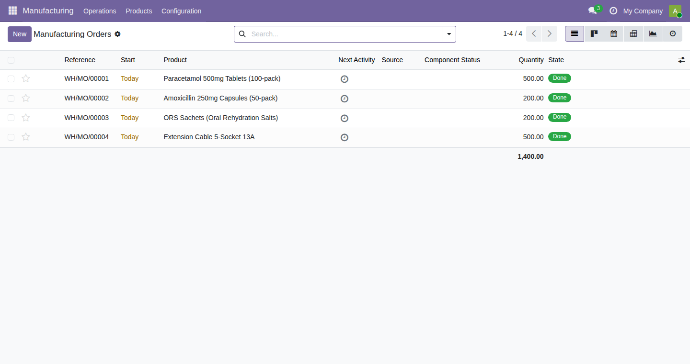
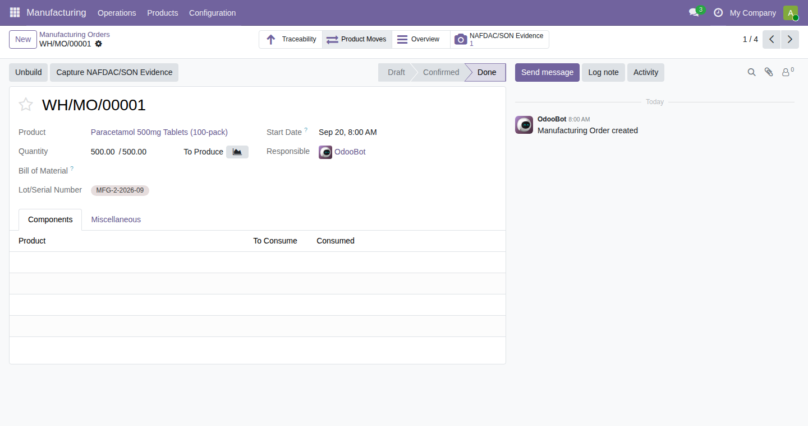
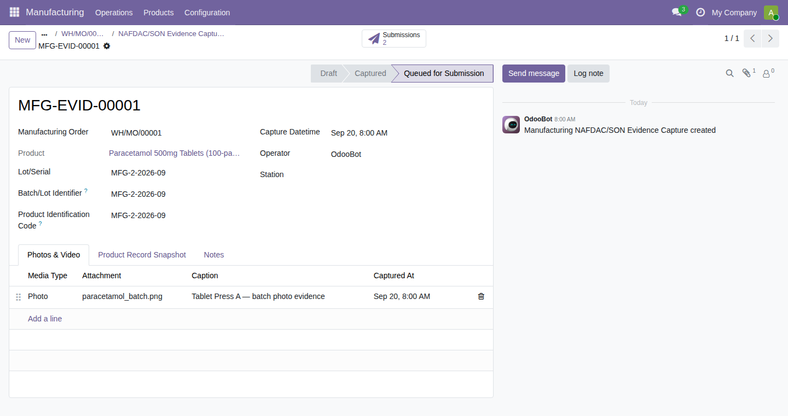
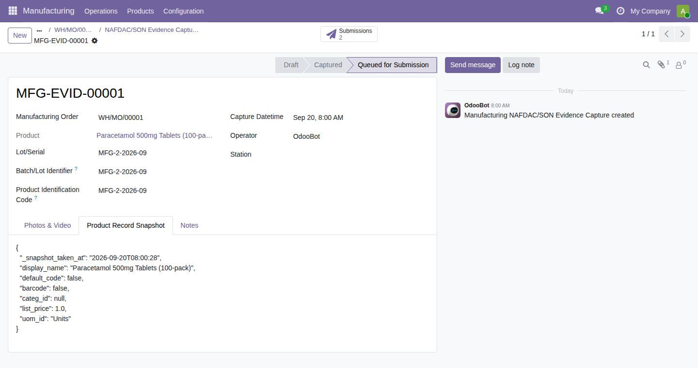
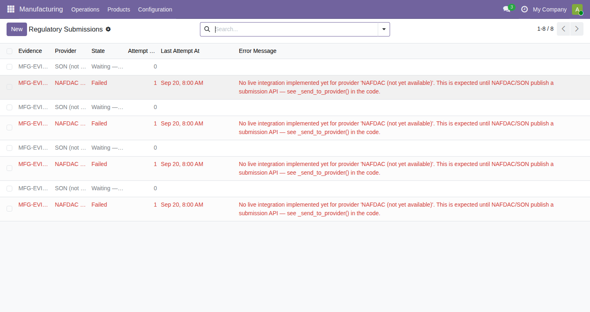
The evidence form's chatter — the message thread and follower panel on the right of the
record — was built with the pre-Odoo-17 <div class="oe_chatter"> markup.
Against a real Odoo 19 runtime that doesn't just look outdated, it breaks the layout
outright: the form's main sheet collapsed to a 34-pixel sliver while the chatter's two
underlying one2many fields rendered as raw, unstyled list editors in its place. One-line
fix — swap it for Odoo 19's own <chatter/> tag, the same one mrp
and stock use internally — and the form renders exactly as designed. It's
exactly the kind of bug that a written-but-never-run module carries silently, and that only
shows up once something actually opens the page.
From there the same session continues into the inventory and checkout side — login, the Purchase Orders queue, the bulk result set, a verified lot, and a failed one:
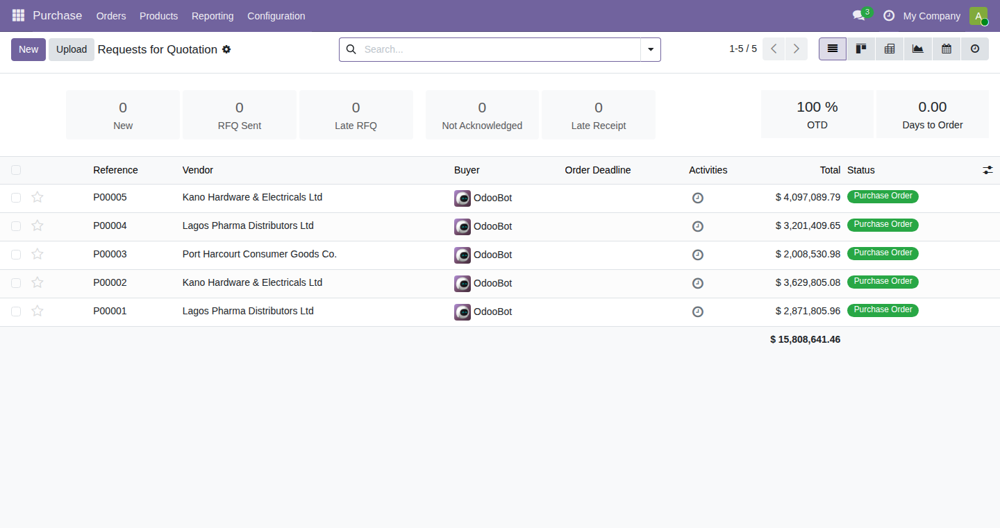
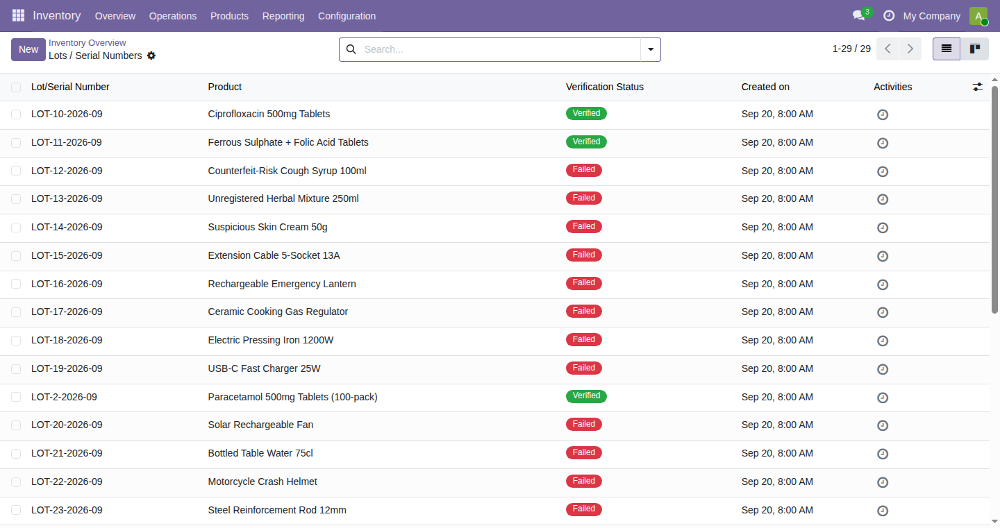
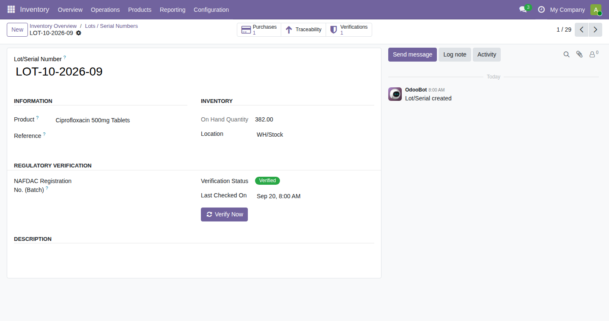
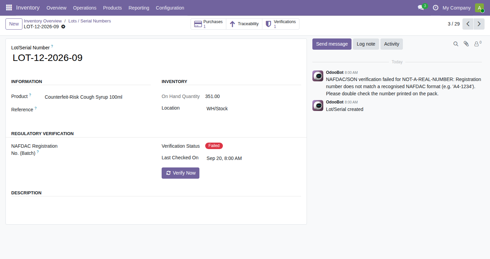
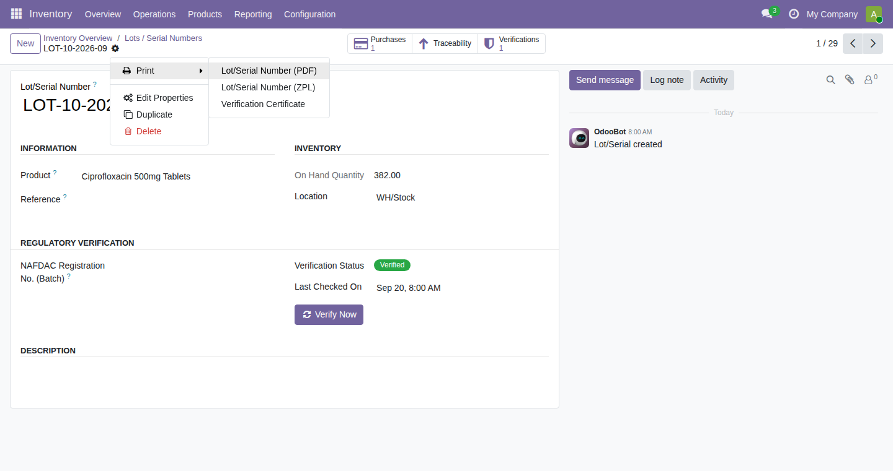
That last step doesn't render a page — it triggers a real PDF download. Rather than embed a live PDF viewer (inconsistent support in some in-app/mobile browsers), here's that actual downloaded document, rendered as an image rather than the browser UI around it:
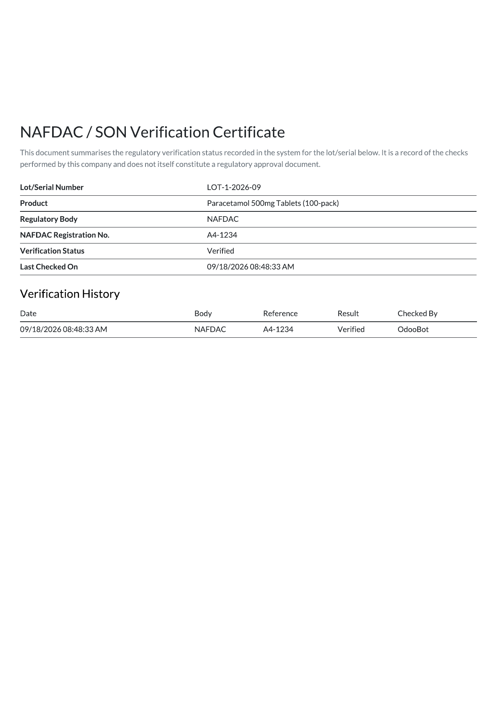
Most of the SON test numbers used a hyphenated format
(SON-MC-10234) and every single one of them failed. The module's structural
check for SON numbers only accepts A-Z, a-z and 0-9 —
no hyphens. That pattern was invisible with one hand-picked test record; it only showed up
once there was enough data for it to repeat. It's now a regression test in the repo rather
than a silent surprise — and a real question worth settling before wiring up a live SON
provider: do certificate numbers in the field actually contain hyphens?
Every screenshot above came from a real Selenium WebDriver session against a real
Chrome-for-Testing binary — not a mock, not the DevTools protocol driven directly. The video
is assembled from that same set of real captured frames rather than a continuous screen
recording. demo/selenium_capture_full.py in the repo runs the identical session,
manufacturing stage included, on any machine with a normal Chrome/Chromium install and a
matching chromedriver.
Builds the full data set end to end — 4 Manufacturing Orders with captured evidence and
a live-drained submission queue, vendors, 25 regulated products, 5 POs, 25 lots — and runs
the bulk verification pass. Runnable via odoo-bin shell -d <db> <
demo/bulk_e2e_workflow_full.py against your own Odoo 19 instance.
Drives a real browser through the entire workflow via Selenium — manufacturing evidence capture through to checkout-side verification — and captures a screenshot at every step.
⬇ Download scriptThe exact certificate embedded above, as a file — the module's real output for a verified lot, not a mockup.
⬇ Download PDFThe operator clicks Capture NAFDAC/SON Evidence right on the MO form —
no separate app, no re-entering the batch or lot by hand.
The wizard requires at least one photo or video, records the batch/lot identifier, and freezes a full JSON snapshot of the product record — so the evidence is self-contained even if the product record changes later.
One row per known provider (NAFDAC, SON), whether or not that provider is active yet — so nothing captured today is ever missed once a real endpoint exists.
A scheduled action sends every pending submission the moment a provider is switched on — today that means every submission fails cleanly, with the real reason logged, because no public NAFDAC/SON manufacturer-facing API exists yet.
A controller hook calls _ensure_regulatory_verification_fresh() on the
order, re-checking any regulated line item that isn't currently in a "verified" state.
The right provider (NAFDAC or SON) is resolved from the registry, verification runs, and every attempt — pass or fail — is written to a dedicated Verification Log for audit.
Verified / Failed / Pending / Not Yet Checked shows on the cart page and, separately, on the checkout sidebar — two different Odoo templates I had to patch individually once I noticed the badge appeared on one but not the other.
A failed or unchecked regulated item can stop checkout outright, reusing website_sale's own payment-error banner with a plain-language explanation instead of a generic failure.
A delivery containing an unverified regulated lot can't be validated either — the check follows the product from the stockroom to the storefront, not just one or the other.
All three modules were installed on a real Odoo 19 runtime, not just written and assumed
to work: a full install/upgrade/test cycle caught and fixed nine real issues (a v19 field
rename, invalid search-view syntax, a missing .sudo() causing an ACL error for
anonymous shoppers, the two-template badge gap above, a broken manufacturing-evidence form
using pre-v17 chatter markup that collapsed the form's layout, and a scheduled-action data
file referencing ir.cron's long-removed doall field — a hard
install failure on v19, not a warning — among others). Adding a
verified product to cart shows the badge on both the cart page and the checkout sidebar; an
intentionally invalid registration number correctly blocks payment with the customer-facing
message; producing a batch, capturing evidence, and draining the submission queue against an
Active-but-endpoint-less provider all behave exactly as designed. The test suite passes
5/5.
I'm not going to oversell this. The module enforces a policy and produces a clean audit trail, but the demo providers only check that a registration number is well-formed, not that it corresponds to a real, currently-valid registration. That gap can only be closed with one of two things: genuine API access from NAFDAC or SON, or a data-sharing agreement with a licensed reseller who already has it. The architecture is deliberately built so that either option is a drop-in change, not a redesign — but it is still a real, current limitation, not a solved problem.
The manufacturing side has its own honest limit, and it's a different kind: evidence capture is a workflow, not a control. Nothing in mrp_nafdac_son_registration stops an operator from photographing the wrong batch, backdating a capture, or simply skipping the "Capture NAFDAC/SON Evidence" button altogether — a Manufacturing Order can still be marked Done without it. What it does guarantee is that when evidence is captured, it's timestamped, attributed to a specific user, and immutable — a real record a regulator or auditor can trust once submitted, not proof that every batch has one. Closing that gap is a process and training question for whoever runs the line, not something software alone can enforce.
I looked. NAFDAC publishes no documented, supported developer API for real-time product lookups: what exists are undocumented internal endpoints that third parties have reverse-engineered from its Greenbook app, and paid scraping services built specifically because no official one exists. SON's SONCAP system has no consumer-facing verification tool at all — it is a pre-shipment, import-clearance workflow run through Independent Accredited Firms, closed to the public entirely. For products where a wrong guess can kill — medicine chief among them — a shopper having no fast, reliable way to check what they're about to take isn't a UX gap. It's a life-and-death one, and it deserves to be treated with that urgency.
I'm not writing this to score points off two agencies doing genuinely difficult work against a large, well-documented counterfeiting problem. The enforcement numbers above show real effort on the supply side. But the consumer-facing verification layer — the one moment where an ordinary shopper could actually protect themselves — is the part that keeps failing in independent testing and in my own. That's worth asking about directly.
I'd welcome a reply from either agency in the comments, by email, or through NAFDAC's own published enquiry and complaints lines. If there's a technical reason my test failed that I've missed, I'll gladly update this article to reflect it — that's the whole point of publishing the source alongside the claim.
Whether or not NAFDAC and SON ever open a real-time API, businesses selling regulated products in Nigeria don't have to wait to build honesty into their own operation — from the production line to checkout. Logging every registration number, capturing evidence at the point of manufacture, flagging what's unverified, and giving staff and customers a clear status — verified, failed, pending — is something a store can do today, on infrastructure it already runs. It won't replace a functioning national verification system. It's a start.
The full read, with the working modules and the architecture behind them, is published at niyid.github.io/nafdac-son-verification/linkedin-article.html. All three modules are free to download above — LGPL-3, the same licence Odoo uses for its own addons — for anyone running Odoo who wants to adopt, audit, or extend them.
To the counterfeiters, the diverters of genuine stock, and everyone profiting from a Nigerian's inability to tell real medicine from fake: you are not outsmarting a system, you are hollowing out the ground you stand on too.
"T'ẹní bẹ́gi lójù, igi á rúwé."
The shame is on the one who cuts the tree — it will sprout leaves again.
This society regrows what you cut. Your sabotage doesn't stop it — it only marks you.
"Ọ̀bẹ́ ńwólé, ara ẹ̀ ó ní òún ḿba àkọ̀ jẹ́."
The knife destroys its own home, yet claims it is only ruining the sheath.
Said of those whose actions injure themselves more than anyone else — the knife lives inside the sheath it's tearing apart. Sabotage your own society while telling yourself you're only hurting a system, and the sheath you needed all along is the first thing you lose. It was never someone else's suicide — only your own, drawn out slowly.